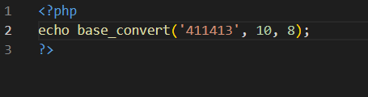
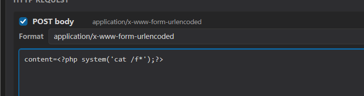
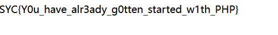

ezphp — 值与位置的错位，写入通道与过滤器的错位¶
题目类型：Web — PHP 进制解析绕过 + 流包装器写入绕过
题目地址：ctfplus 平台实例（已关闭）
Flag：
SYC{Y0u_have_alr3ady_g0tten_started_w1th_PHP}
题目概述¶
两道关，一关传参数，一关写文件。
第一关（index.php）：一个 num 参数，四道检查，全过才给你 $_SESSION['ezphp_level1'] 并跳到 death.php。
第二关（death.php）：要有第一关的 session，然后接收 filename 和 content，往文件里写：
两关的共同点：都在利用“同一段数据被两个东西读出两种含义”。
解题过程¶
Step 1：第一关，先看四道检查在拦什么¶
首先进行代码审计：
| 检查 | 拦的是 | 你要满足 |
|---|---|---|
!is_string($num) |
数组 | 传字符串 |
$num == 411413 |
直接输入答案 | 不能弱等于 411413 |
preg_match("/[a-z\.]/i") |
所有字母 + 点 | 不能有 e、x、b |
!strpos($num,"0") |
0 在第 0 位 |
0 必须在后面 |
intval($num,0) === 411413 |
—— | 解析后必须等于 411413 |
Step 2：确定只剩八进制¶
intval($num, 0) 第二个参数为 0，那么就看 num 的开头：
0x 开头 → 16 进制 ✗ 字母 x 被 [a-z] 拦了
0b 开头 → 2 进制 ✗ 字母 b 被拦了
0 开头 → 8 进制 ✓ 纯数字，只剩这条
其他 → 10 进制 ✗ 十进制真值会等于 411413，被第一道 `==` 拦
所以这里只能用 8 进制。
Step 3：但 0 不能是第一个 —— 用换行符¶
八进制必须以 0 开头，可 strpos 那道又不许 0 在第 0 位。
关键在于：intval 会跳过前导空白，而 strpos 不会跳过任何东西 —— 它只是找下标。
strpos("01443425","0") = 0 → !0 = true → 死
strpos("\n01443425","0") = 1 → !1 = false → 活
intval("\n01443425", 0) = 411413 → 值对
所以选择用 %0A（换行符）当第一个就可以了。
Step 4：算数字¶
别手算，用 PHP 算：

得到 1443425，前面补 0 就是 01443425。
⚠️ 数字必须完整。 少一位（比如写成 0144325）intval 会得到 51413，差得非常远。
Step 5：第二关，<?php exit;?> 是“前缀死刑”¶
进来之后源码就很明晰了：
写出来的文件是这样的：
exit; 会在你的代码之前执行，整个请求立刻结束 —— 后面那段永远到不了。
它不删你的代码，只是让你的代码排不上队。
Step 6：要改的是 filename，不是 content¶
file_put_contents 的第一个参数是文件名，而 PHP 的文件名支持流包装器。所以我能控制的不只是“写到哪”，还有“写入途中经过什么处理”：**
这就是这题的突破口 —— 问题不在 content 装不进去，而在写入通道可以被编程。
Step 7：convert.base64-decode 把前缀变成乱码¶
用 convert.base64-decode，数据在落盘前会先做一次 base64 解码。而 base64 解码器的规则是：
<?php exit;?> 里能留下的只有 phpexit —— 7 个字母：
留下的 7 个字母会被当成数据解码，变成 6 个乱码字节。
最终文件变成：
乱码里没有 <，所以 PHP 不会在那里进入代码模式，只是把它当普通字节输出（页面顶部那几个怪字符）；后面我们自己的 <?php 才是第一个被识别的开标签。
Step 8：必须补字符对齐¶
base64 解码要求有效字符数是 4 的倍数。
不足 4 的倍数，滤镜会报 invalid byte sequence，写入直接失败。
所以要在 base64 前面补 1 个字符（或 5 个），跟前面的 7 个凑成 8（或 12）。
Step 9：把 content= 也编码进去 —— 我踩的第一个坑¶
这里我最开始不知道在干嘛，把 content= 也放进去编码了，查询时一直报错，太迷了。
content 是字段名，必须原样出现在 body 里，不能被编码：
如果把整段 content=<?php ...?> 都编码了，PHP 解析出来的键就是那一长串 base64，$_POST['content'] 根本不存在 —— 后端第一句 isset 就 exit 了，页面一片空白。
Step 10：尾部 = 和 + 的坑¶
当时遇到一个问题：用工具编码后，结尾那个字符在表单里会被改掉，导致访问文件失败。
原因是 base64 里有两个特殊字符：
| 字符 | 是什么 | 表单里会怎样 |
|---|---|---|
+ |
字母表第 62 号，真实数据 | 被当成空格，整个末尾错位 |
= |
填充符，不是数据 | 被某些工具当分隔符处理，删掉后末组不完整 |
?> 是两个字节，编成 base64 就是 Pz4= —— 结尾一定带 =。
所以这里我就删掉了 ?>，反正单个 ; 也能确定语句的结束。
去掉 ?> 之后，base64 结尾是 Jyk7（纯字母数字），整个值里没有任何会被表单规则特殊对待的字符。
顺带说：PHP 文件本来就不需要 ?> 结尾，官方也建议省略 —— 这一刀砍得对。
Step 11：拼起来拿 flag¶

GET ?filename=php://filter/write=convert.base64-decode/resource=shell.php
POST content=A<去掉 ?> 的 base64>
访问 shell.php：

解题思路总结¶
第一关：
四道检查互斥
→ 字母全禁 → 只剩八进制（0x / 0b 都要字母）
→ 但 strpos 不许 0 在第 0 位
→ 用换行符占位：intval 跳过它，strpos 数它
→ 算 411413 的八进制，拼起来，进 session
第二关：
file_put_contents 的 filename 可控 → 能挂流包装器
→ 前缀 <?php exit;?> 会先执行 → 必须毁掉它
→ convert.base64-decode：非字母表字符全丢，字母被解码成乱码
→ 7 个字母 + 补 1 个对齐 → 前缀变成 6 字节乱码
→ 文件 = 乱码 + 我们的 shell → 执行 → flag
漏洞原理¶
① 同一个字符串，两个函数读出两种含义
"\n01443425" 对前者是 411413，对后者是"0 出现在第 1 位"。两个结论都成立，检查就被夹在中间。
② 写入通道可编程
file_put_contents 的文件名支持 php://filter，等于把"写文件"变成了"写文件前先过一道处理"。前缀防护在这种通道面前形同虚设。
③ base64 解码器只认字母表
它不认识 PHP，不知道 <?php 意味着代码。它只会：字母表里的解码，字母表外的丢掉。所以 <?php exit;?> 不会被"删除"，而是被"翻译成 6 个字节的乱码"。
关键知识点¶
| 知识点 | 说明 |
|---|---|
intval($s, 0) |
base 0 = 按前缀自动判进制：0x 十六 / 0b 二 / 0 八 / 其余十 |
| 前导空白 | intval 跳过（isspace：空格 \t \n \r），strpos 不跳过 |
strpos 返回 0 |
0 是 falsy，所以 !strpos(...) 会把"出现在首位"和"没找到"判成同一种情况 |
== vs intval |
弱比较走自动转换（十进制），intval(,0) 走显式进制解析 —— 两者可以给出不同的值 |
| 流包装器 | php://filter/write=<滤镜>/resource=<路径>，写入前可编程处理 |
| base64 解码规则 | 只认 [A-Za-z0-9+/=]，其余丢弃；每 4 字符 → 3 字节 |
| base64 填充 | = 表示最后一组没装满；删掉后严格解码器会丢掉末组 |
| 表单编码 | + 变空格、= 是分隔符 —— base64 结尾这两个字符最容易被改坏 |
?> 可省 |
PHP 文件末尾不需要闭合标签，官方建议省略 |
第一关源码
<?php
ob_start();
session_start();
highlight_file(__FILE__);
include("flag.php");
if (!isset($_GET['num'])) {
exit;
}
$num = $_GET['num'];
if (!is_string($num)) {
die("xiexie 不喜欢数组。");
}
if ($num == 411413) {
die("这都无法做到吗!");
}
if (preg_match("/[a-z\.]/i", $num)) {
die("xiexie感觉你应该没办法了!!");
}
if (!strpos($num, "0")) {
die("玉米说以防万一再试试这个!!!");
}
if (intval($num, 0) === 411413) {
$_SESSION['ezphp_level1'] = true;
header("Location: death.php");
exit;
}
echo "<p>好像还差一点。</p>";
?>
第二关源码
<?php
session_start();
if (empty($_SESSION['ezphp_level1'])) {
http_response_code(404);
exit("not found");
}
highlight_file(__FILE__);
if (!isset($_GET['filename'], $_POST['content'])) {
exit;
}
$filename = $_GET['filename'];
$content = $_POST['content'];
if (!is_string($filename) || !is_string($content)) {
exit("说了xiexie不喜欢数组。");
}
// hint：普通相对路径会写入站点根目录 /var/www/html/。
$written = @file_put_contents(
$filename,
"<?php exit;?>" . $content
);
if ($written === false) {
exit("写入失败。");
}
echo "xiexie吞了吞口水，他好像知道自己失败了";
?>